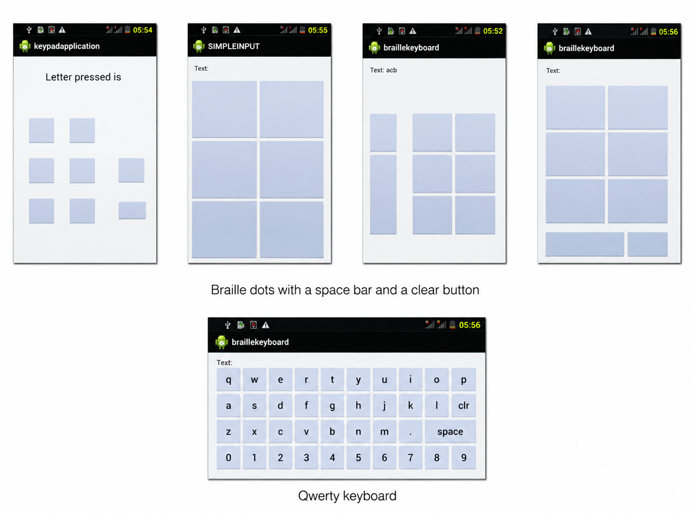

i.
six keys
The screen is divided into a grid of six, arranged like the six dots of a braille cell. Pressing the right keys types a letter.
We built several keypads on Android to find the usability problems: different key sizes, a space bar and a clear button, and a QWERTY keyboard for comparison.
